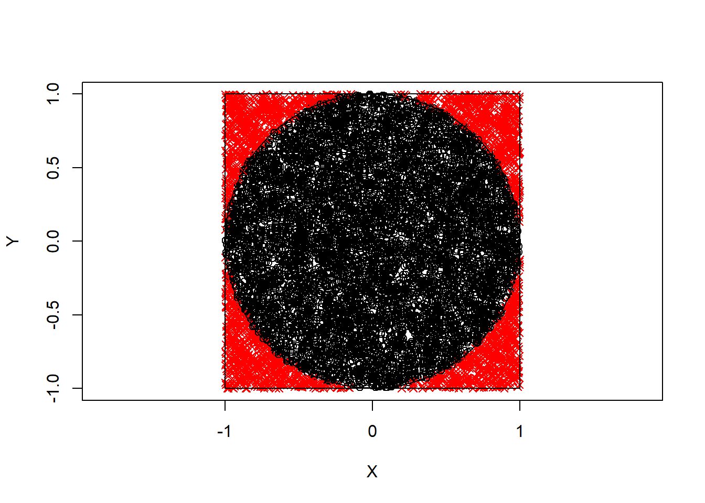
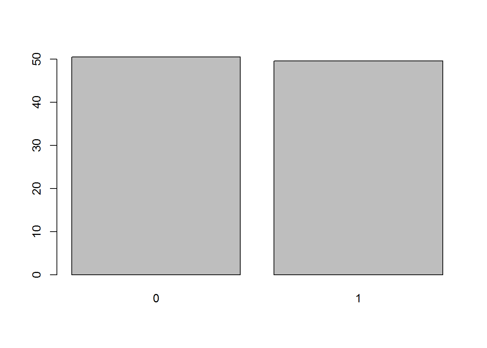
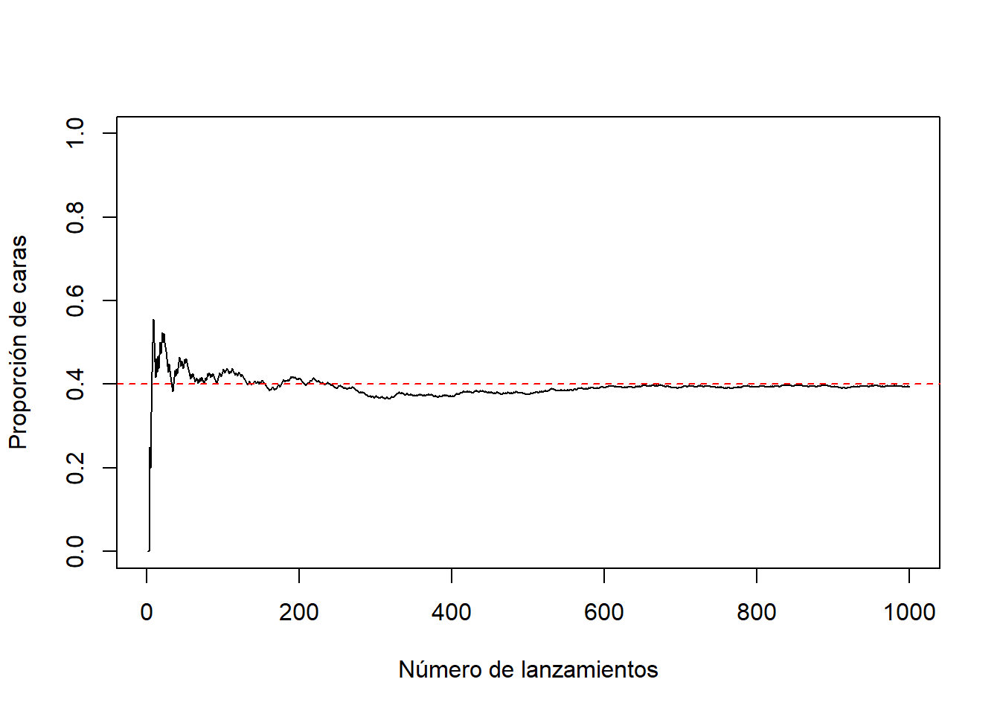

Capítulo 2 Números aleatorios en R
La generación de números pseudoaleatorios en R es una de las mejores disponibles en paquetes estadísticos. Entre las herramientas en el paquete base de R estarían:
set.seed(entero): permite establecer la semilla (y el generador).RNGkind: selecciona el generador.rdistribución(n,...):genera valores aleatorios de la correspondiente distribución. Por ejemplo:runif(n, min = 0, max = 1), generaríanvalores de una uniforme.sample: genera muestras aleatorias (v.a. discretas) y permutaciones.
La semilla se almacena (en globalenv) en .Random.seed; es un vector de enteros cuya dimensión depende del tipo de generador:
No debe ser modificado manualmente; se guarda con el entorno de trabajo.
Si no se especifica con
set.seed(o no existe) se genera a partir del reloj del sistema.
semilla <- .Random.seed.
2.1 Opciones
La función RNGkind(kind = NULL, normal.kind = NULL) permite seleccionar el tipo de generador (en negrita los valores por defecto):
kindespecifica el generador aleatorio:“Wichmann-Hill”: Ciclo \(6.9536\times10^{12}\)
“Marsaglia-Multicarry”: Ciclo mayor de \(2^{60}\)
“Super-Duper”: Ciclo aprox. \(4.6\times10^{18}\) (S-PLUS)
“Mersenne-Twister”: Ciclo \(2^{19937}-1\) y equidistribution en 623 dim.
“Knuth-TAOCP-2002”: Ciclo aprox. \(2^{129}\).
“Knuth-TAOCP”
“user-supplied”
normal.kindselecciona el método de generación de normales (se tratará más adelante). “Kinderman-Ramage”, “Buggy Kinderman-Ramage”, “Ahrens-Dieter”, “Box-Muller”, “Inversion” , o “user-supplied”
2.2 Paquetes de R
Otros paquetes de R que pueden ser de interés:
setRNGcontiene herramientas que facilitan operar con la semilla (dentro de funciones,…).randomgeneración de numeros “true random”.randtoolboximplementa generadores más recientes (rngWELL) y generación de secuencias cuasi-aleatorias.RDieHarderimplementa diversos contrastes para el análisis de la calidad de un generador y varios generadores.Runuraninterfaz para la librería UNU.RAN para la generación (automática) de variables aleatorias no uniformes.rsprngyrstreamimplementan la generación de múltiples secuencias (e.g. para programación paralela).gls,rngwell19937,randaes,SuppDists,lhs,mc2d,fOptions, …
2.3 Ejercicios
Sea \((X,Y)\) es un vector aleatorio con distribución uniforme en el cuadrado \([-1,1]\times\lbrack-1,1]\) de área 4.
Aproximar mediante simulación \(P\left(X + Y \leq 0 \right)\) y compararla con la probabilidad teórica (obtenida aplicando la regla de Laplace \(\frac{\text{área favorable}}{\text{área posible}}\)).
Probabilidad teórica 1/2 (area favorable / área total)
set.seed(1) n <- 10000 x <- runif(n, -1, 1) y <- runif(n, -1, 1) indice <- (x+y < 0) # Aproximación por simulación sum(indice)/n## [1] 0.4996mean(indice) # Alternativa## [1] 0.4996Nota: R maneja internamente los valores lógicos como 1 (TRUE) y 0 (FALSE).Aproximar el valor de \(\pi\) mediante simulación a partir de \(P\left( X^2 +Y^2 \leq 1 \right)\).
set.seed(1) n <- 10000 x <- runif(n, -1, 1) y <- runif(n, -1, 1) indice <- (x^2+y^2 < 1) mean(indice)## [1] 0.7806pi/4## [1] 0.7853982pi_aprox <- 4*mean(indice) pi_aprox## [1] 3.1224Gráfico
# Colores y símbolos depediendo de si el índice correspondiente es verdadero: color <- ifelse(indice, "black", "red") simbolo <- ifelse(indice, 1, 4) plot(x, y, pch = simbolo, col = color, xlim = c(-1, 1), ylim = c(-1, 1), xlab="X", ylab="Y", asp = 1) # asp = 1 para dibujar circulo symbols(0, 0, circles = 1, inches = FALSE, add = TRUE) symbols(0, 0, squares = 2, inches = FALSE, add = TRUE)
Consideramos el experimento de Bernoulli consistente en el lanzamiento de una moneda.
Empleando la función
sample, obtener 1000 simulaciones del lanzamiento de una moneda(0 = cruz, 1 = cara), suponiendo que no está trucada. Aproximar la probabilidad de cara a partir de las simulaciones.set.seed(1) nsim <- 10000 x <- sample(c(cara = 1, cruz = 0), nsim, replace = TRUE, prob = c(0.5,0.5)) mean(x)## [1] 0.4953barplot(100*table(x)/nsim) # Representar porcentajes
En R pueden generarse valores de la distribución de Bernoulli mediante la función
rbinom(nsim, size=1, prob). Generar un gráfico de lineas considerando en el eje \(X\) el número de lanzamientos (de 1 a 10000) y en el eje \(Y\) la frecuencia relativa del suceso cara (puede ser recomendable emplear la funcióncumsum).set.seed(1) nsim <- 1000 p <- 0.4 x <- rbinom(nsim, size = 1, prob = p) # Simulamos una Bernouilli n <- 1:nsim # Alternativa programación: x <- runif(nsim) < p mean(x)## [1] 0.394plot(n, cumsum(x)/n, type="l", ylab="Proporción de caras", xlab="Número de lanzamientos", ylim=c(0,1)) abline(h=p, lty=2, col="red")
Simular el paso de corriente a través del siguiente circuito, donde figuran las probabilidades de que pase corriente por cada uno de los interruptores:

Considerar que cada interruptor es una v.a. de Bernoulli independiente para simular 1000 valores de cada una de ellas.
TRUE) y 0 (FALSE). Recíprocamente, cualquier nº puede ser tratado como lógico (al estilo de C). El entero 0 es equivalente a FALSE y cualquier entero distinto de 0 a TRUE.
set.seed(1)
nsim <- 10000
x1 <- rbinom(nsim, size=1, prob=0.9)
x2 <- rbinom(nsim, size=1, prob=0.8)
z1 <- x1 | x2 # Operador lógico "O"
x3 <- rbinom(nsim, size=1, prob=0.6)
x4 <- rbinom(nsim, size=1, prob=0.5)
z2 <- x3 | x4
z3 <- z1 | z2
x5 <- rbinom(nsim, size=1, prob=0.7)
fin <- z3 & x5 # Operador lógico "Y"
mean(fin)## [1] 0.6918En 1651, el Caballero de Méré le planteó a Pascal una pregunta relacionada con las apuestas y los juegos de azar: ¿es ventajoso apostar a que en cuatro lanzamientos de un dado se obtiene al menos un seis? Este problema generó una fructífera correspondencia entre Pascal y Fermat que se considera, simbólicamente, como el nacimiento del Cálculo de Probabilidades.
Escribir una función que simule el lanzamiento de \(n\) dados. El parámetro de entrada es el número de lanzamientos \(n\), que toma el valor 4 por defecto, y la salida debe ser
TRUEsi se obtiene al menos un 6 yFALSEen caso contrario.deMere <- function(n = 4){ lanz <- sample(1:6, replace=TRUE, size=n) return(6 %in% lanz) } n <- 4 lanz <- sample(1:6, replace=TRUE, size=n) lanz## [1] 4 5 3 16 %in% lanz## [1] FALSEUtilizar la función anterior para simular \(nsim=10000\) jugadas de este juego y calcular la proporción de veces que se gana la apuesta (obtener al menos un 6 en \(n\) lanzamientos), usando \(n=4\). Comparar el resultado con la probabilidad teórica \(1-(5/6)^{n}\).
set.seed(1) n <- 4 nsim <- 10000 mean(replicate(nsim, deMere(n)))## [1] 0.51951-(5/6)^n## [1] 0.5177469
2.4 Tiempo de CPU
La velocidad del generador suele ser una característica importante. Para evaluar el rendimiento están disponibles en R distintas herramientas:
proc.time(): permite obtener tiempo de computación real y de CPU.tini <- proc.time() # Código a evaluar tiempo <- proc.time() - tinisystem.time(expresión): muestra el tiempo de computación (real y de CPU) de expresión.Rprof(fichero): permite evaluar el rendimiento muestreando la pila en intervalos para determinar en que funciones se emplea el tiempo de computación (de utilidad para optimizar la velocidad).Rprof(NULL): desactiva el muestreo.summaryRprof(fichero): muestra los resultados.
2.4.1 Utilidades tiempo de CPU
Por ejemplo, podríamos emplear las siguientes funciones para ir midiendo los tiempos de CPU durante una simulación:
CPUtimeini <- function() {
.tiempo.ini <<- proc.time()
.tiempo.last <<- .tiempo.ini
}
CPUtimeprint <- function() {
tmp <- proc.time()
cat("\nTiempo última operación:\n")
print(tmp-.tiempo.last)
cat("Tiempo total operación:\n")
print(tmp-.tiempo.ini)
.tiempo.last <<- tmp
}Llamando a CPUtimeini() donde se quiere empezar a contar, y a CPUtimeprint() para imprimir el tiempo total y el tiempo desde la última llamada a una de estas funciones. Ejemplo:
funtest <- function(n) median(runif(n)) # Función de prueba...
CPUtimeini()
funtest(1000000)## [1] 0.5004536CPUtimeprint()##
## Tiempo última operación:
## user system elapsed
## 0.19 0.05 0.19
## Tiempo total operación:
## user system elapsed
## 0.19 0.05 0.19funtest(1000)## [1] 0.4954613CPUtimeprint()##
## Tiempo última operación:
## user system elapsed
## 0 0 0
## Tiempo total operación:
## user system elapsed
## 0.19 0.05 0.192.4.2 Paquetes de R
Por ejemplo, se puede emplear el paquete npsp (fichero cpu.time.R):
Call
cpu.time(restart = TRUE)where you want to start counting.Call
cpu.time()to print/get total and/or partial (since the last call to this function) real and CPU times.
# CPU time utilities
# ------------------
#' @rdname npsp-internals
#' @keywords internal
#' @export
.cpu.time.ini <- function() {
time.ini <- structure(rep(0, 5), .Names = c("user.self", "sys.self", "elapsed",
"user.child", "sys.child"), class = "proc_time")# proc.time()
time.last <- time.ini
function(..., reset = FALSE, total = TRUE, last = TRUE, flush = FALSE) {
res <- list(time = proc.time())
if (reset) {
time.ini <<- res$time
time.last <<- time.ini
res$last <- res$total <- 0
if (total | last) cat("CPU time has been initialized.\n")
} else {
res$last <- res$time - time.last
res$total <- res$time - time.ini
if (last) {
cat("Time of last operation:", ..., "\n")
print(res$last)
}
if (total) {
cat("Total time:\n")
print(res$total)
}
if (flush) flush.console()
time.last <<- res$time
}
return(invisible(res))
}
}
#' Total and partial CPU time used
#'
#' Returns and (optionally) prints the total and/or partial
#' (since the last call to this function)
#' real and CPU times.
#' @param ... objects (describing the last operation) to be printed
#' (using \code{\link{cat}}),
#' if \code{last == TRUE}.
#' @param reset logical; if \code{TRUE}, time counters are initialized.
#' @param total logical; if \code{TRUE}, the total time used is printed.
#' @param last logical; if \code{TRUE}, the partial time used is printed.
#' @param flush logical; if \code{TRUE}, \code{\link{flush.console}} is called.
#' @return Invisibly returns a list with the following 3 components
#' (objects of class \code{"proc_time"}):
#' \item{time}{user, system, and total elapsed times for the currently running R process
#' (result of a call to \code{\link{proc.time}}). }
#' \item{last, total}{differences between the corresponding \code{\link{proc.time}} calls.}
#' @seealso
#' \code{\link{proc.time}}, \code{\link{system.time}}, \code{\link{flush.console}}.
#' @export
cpu.time <- .cpu.time.ini()Ejemplo:
cpu.time(reset = TRUE)## CPU time has been initialized.res <- funtest(1000000)
cpu.time('\nSample median of', 1000000, 'values =', res, total = FALSE)## Time of last operation:
## Sample median of 1e+06 values = 0.4993793
## user system elapsed
## 0.19 0.03 0.19res <- funtest(1000)
cpu.time('\nSample median of', 1000, 'values =', res)## Time of last operation:
## Sample median of 1000 values = 0.4936829
## user system elapsed
## 0 0 0
## Total time:
## user system elapsed
## 0.19 0.03 0.19Otro paquete que puede ser de utilidad es microbenchmark (si se quieren estudiar con más detalle los tiempos de computación; aunque en este libro no será el caso…). Hay que tener en cuenta que, por construcción, aunque se realicen en la mismas condiciones (en el mismo equipo), los tiempos de CPU en R pueden variar “ligeramente” entre ejecuciones.